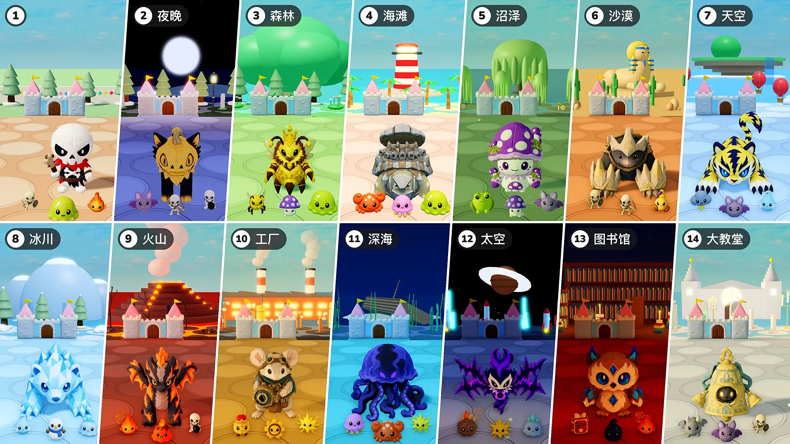

第2赛季 · 更新07 · 11月10日

守护城堡
- 关卡： 现在每10回合为一关。第1关仍是原来的小镇；从第2关起，每一关都是不同的场景，各有自己的光照与天气、地面与摆设，以及固定出现的怪物、精英和首领。最后一个场景之后，会从第2关的场景重新轮起。
- 首领： 由每10回合多出现1名首领调整为始终只有1名首领，原本多出的数量改为同样数量的精英一同登场（第15、20回合1名，第25、30回合2名……）。从第2关起，首领和精英都是该场景的娃娃。蜜蜜女王现在也会作为首领登场。
- 精英： 体型变为1.15倍。从第2关起，每关生命值增加50%，掉落的星星由10颗调整为关卡数×10颗（第2关20颗，第3关30颗……）。
- 新怪物： 新增16种场景怪物（蝙蝠 · 螃蟹 · 水母 · 毒蛙 · 蝎子 · 雷云 · 冰霜精灵 · 雪人 · 冰史莱姆 · 熔岩史莱姆 · 发条士兵 · 齿轮 · 陨石 · 魔法书 · 墨水滴 · 石像鬼）。图鉴的怪物和首领标签页改为按关卡划分。
- 属性强化： 调整为在选择娃娃的回合不再出现属性强化。
- 召唤物： 修复了属性强化不对召唤物生效的问题。现在蜜蜜女王的工蜂、芽芽鸟的树和镜像分身都会和娃娃一样获得属性强化，召唤物在场时选择的属性强化也会立即生效。
- 2倍速： 暂停按钮旁新增“×2”按钮。按下后战斗以2倍速度进行，再按一次回到原速。选择娃娃和强化的时间以及虚拟形象的行走速度保持不变。在“一起玩”中，任何人按下都会作用于整局。
- 城堡生命值： 城堡的生命条变大，生命值数字显示在生命条旁边。
关卡与场景
第2关起的场景及其怪物和首领。作为首领或大首领登场的娃娃，也会作为该场景的精英出现。
- 第2关 · 夜晚： 蝙蝠 · 弓箭骷髅兵 · 炸弹骷髅兵 — 首领：美梦狐 · 毛绒绒 — 大首领：噩梦狐 · 南瓜猫
- 第3关 · 森林： 工蜂 · 毒蘑菇 · 史莱姆 — 首领：松果猬 · 蜜蜜酱 — 大首领：蜜蜜女王 — 精英：芽芽鸟
- 第4关 · 海滩： 螃蟹 · 水母 · 史莱姆 — 首领：椰布林 · 石甲龟 — 大首领：岩布林 · 铁甲龟
- 第5关 · 沼泽： 毒蛙 · 毒蘑菇 · 蝙蝠 — 首领：泥巴猪 · 毒蜗牛 — 大首领：沼角猪 · 孢菇菇
- 第6关 · 沙漠： 近战骷髅兵 · 弓箭骷髅兵 · 蝎子 — 首领：小骨兵 · 软软掌 — 大首领：双骨兵 · 钢铁掌
- 第7关 · 天空： 雷云 · 蝙蝠 · 冰霜精灵 — 首领：伏特灵 · 极光貂 — 大首领：伏特虎 · 狮鹫仔
- 第8关 · 冰川： 冰霜精灵 · 雪人 · 冰史莱姆 — 首领：冰晶仔 · 冰棱鱼 — 大首领：冰晶熊 · 棱镜枪鱼
- 第9关 · 火山： 火种 · 熔岩史莱姆 · 炸弹骷髅兵 — 首领：焰仔 · 灰烬龙 — 大首领：焰凰 · 炽烬龙
- 第10关 · 工厂： 发条士兵 · 齿轮 · 电火花 — 首领：弹珠鼠 · 滴答齿轮 — 大首领：激光鼠 · 黑曜蝎
- 第11关 · 深海： 水母 · 螃蟹 · 电火花 — 首领：水灵灵 · 琉璃蜥 — 大首领：澜龙 · 深渊水母
- 第12关 · 太空： 陨石 · 电火花 · 冰史莱姆 — 首领：虚影 · 回音翼 — 大首领：虚影巨灵 · 噪音翼
- 第13关 · 图书馆： 魔法书 · 墨水滴 · 火种 — 首领：融融烛 · 荆棘鸮 — 大首领：烛光祭司 · 晶头鹰
- 第14关 · 大教堂： 石像鬼 · 蝙蝠 · 近战骷髅兵 — 首领：小光灵 · 铛铛 — 大首领：耀光灵 · 铛铛巨钟